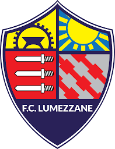

Lumezzane

Il Football Club Lumezzane, meglio noto come Lumezzane, è una società calcistica italiana con sede nella città di Lumezzane, in provincia di Brescia. Milita in Serie C, la terza divisione del campionato italiano.
Fondato nel 2018 previa ridenominazione dell'A.S.D. ValgobbiaZanano, prosegue de facto la tradizione sportiva iniziata nel 1946 con la fondazione dell'Associazione Calcio Lumezzane e interrottasi a seguito della cessazione d'attività sopraggiunta al termine della stagione 2017-2018.
La squadra vanta quale maggior successo della propria storia venti stagioni trascorse in terza serie, ove il miglior risultato è costituito da un secondo posto. Nel suo palmarès, a livello nazionale vanta la conquista di una Coppa Italia Lega Pro. Dal 1993 al 2017 ha inoltre accumulato ventiquattro stagioni consecutive nel professionismo.